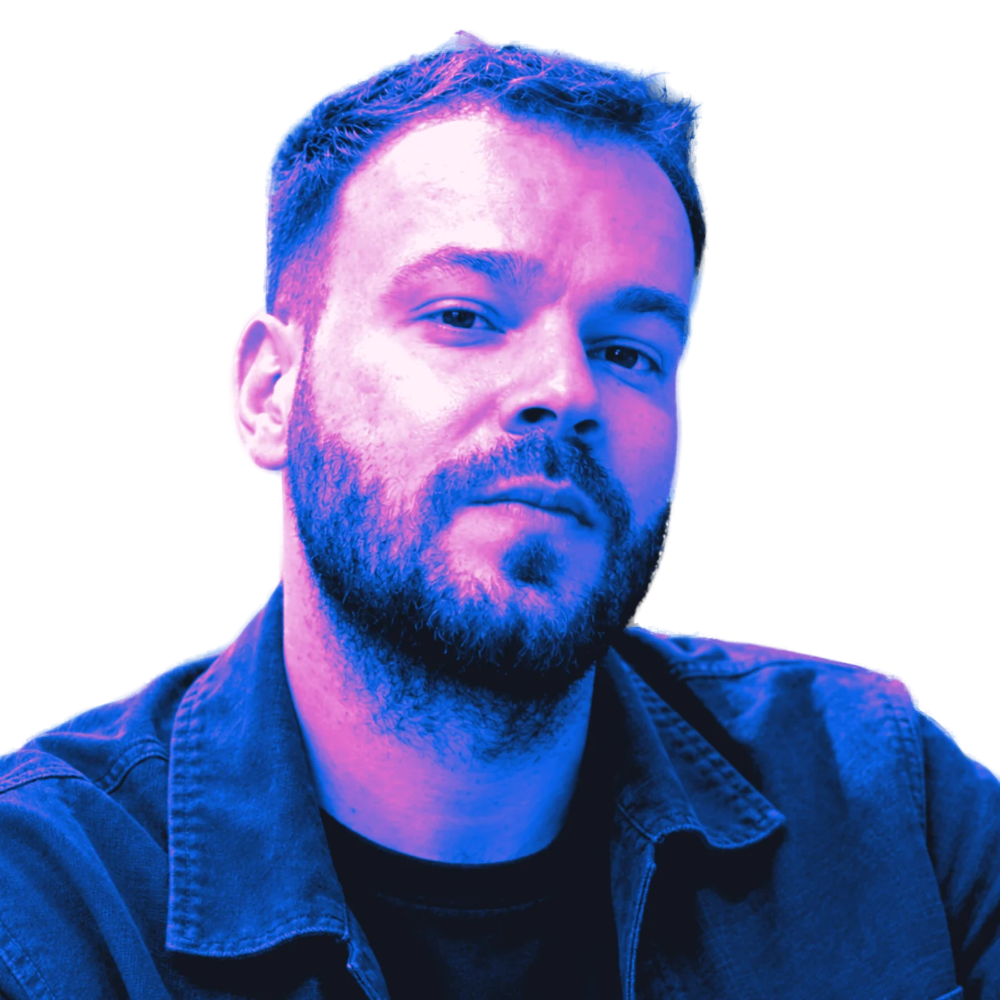

Digital Creative Strategist- 15 postări
- 30+ branduri
- 12 ani în digital
Digital Creative Strategist · București
Fac ideile bune greu de ignorat, în social media, eCommerce și campanii.
Concept creativ · eCommerce · AI în workflow
Ex McCann, Saatchi & Saatchi, De Silva Exclusiv. Acum: Spring.
linkedin.com/in/georgevidene